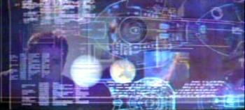
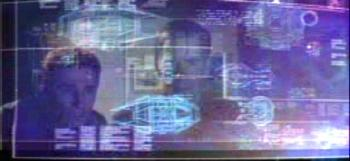

026 - Shockwave - Part I |
| SEQ | 26 | |
| UPN | 22.05.2002 | |
| CJ | 06.08.2004 | |
| VHS | 1.13 (PG) | |
| STO | Rick Berman Brannon Braga |
|
| REG | Allan Kroeker | |
| MUS | Dennis McCarthy | |
| GUS | Silik | John Fleck |
| Daniels | Matt Winston | |
| Amm. Maxwell Forrest | Vaughn Armstrong | |
| Umanoide del futuro | James Horan | |
| Receptionist I.M.E. | Stephanie Erb | |
| Ufficiale tattico | David Lewis Hays | |
| IT | Onda d'urto - Prima parte | |
| DE | Die Schockwelle, Teil 1 (L'onda d'urto, Prima parte) | |
| BR | Onda de Choque, Parte I | |
2152: All'Enterprise viene ordinato di ritornare sulla Terra dopo che l'equipaggio della nave sembra aver causato la distruzione di un pianeta. Archer riceve la visita di Daniels, un ex membro dell'equipaggio che ha viaggiato nel tempo per avvisarlo che la missione dell'Enterprise è in pericolo a causa di alcune azioni di sabotaggio dei Sulibani.
| Defiant, classe Nova e Enterprise NX-01 |  |
| Enterprise NX-01 e Excelsior |  |
| Classe Nova |  |
| Enterprise NX-01, classe Intrepid e Ambassador. |  |
| Enterprise NX-01, classe Intrepid e Nova |  |
Archer: We're making history with every...
Tucker: ...every lightyear. You know, I think I've heard you say that at
least half a dozen times. [T:00:56]
Archer: It wouldn't be very polite to ignite their atmosphere. [T:01:30]
Forrest: You've got a crew that's going to be looking to you to figure out how to react to all this. Don't let them down. [T:06:38]
Phlox: It's been my experience that Humans have a great deal of difficulty separating emotional despair from what you call responsibility. [T:07:29]
Sato: Anyone tries to badmouth Captain Archer in front of me, he's gonna get an earful, in any language they want! [T:11:30]
Archer: You know... this has got to be the first time a Vulcan... has ever attempted to cheer up a Human. [T:13:39]
Daniels: That hasn't happened, yet.
Archer: That's a load of crap and you know it!
Daniels: Huh! I've had this conversation with half a dozen people: it
always ends up the same way. [T:18:54]
Archer: Can't you ever give a straight answer?
Daniels: Depends on the question. [T:19:03]
Archer: I thought you were supposed to protect the timeline, not screw
with it.
Daniels: It's already been... screwed with, Captain. [T:19:17]
Daniels: D'you remember the temporal cold war I spoke of?
Archer: It's kinda hard to forget! [T:19:45]
T'Pol: As I've told you, the Vulcan Science Directorate has concluded
that time travel is impossible.
Archer: Well, good for the Vulcan Science Directorate. [T:33:25]
Archer: Why don't you give me another explanation?
T'Pol: I can't.
Archer: Because there isn't one. [T:33:56]
Archer (a T'Pol): I don't know what's going to happen, but try to keep an open mind. Especially when it comes to things that the Vulcan Science Directorate says are... impossible.